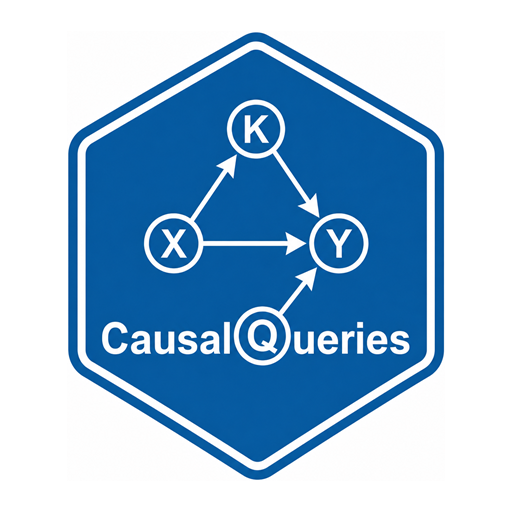

Simplify nodal types (drop interactions, impose monotonicity)
Source:R/simplify_model.R
simplify_model.RdBuild or rebuild a model's nodal types without (necessarily) starting from a saturated many-parent table and cutting with queries. Intended for large parent sets: generate allowed schedules under interaction-order and monotonicity rules, then attach them.
Usage
simplify_model(
model,
drop_interactions = NULL,
keep_interactions = NULL,
monotone = NULL,
nodes = NULL,
quiet = FALSE
)
set_nodal_restrictions(
model,
drop_interactions = NULL,
keep_interactions = NULL,
monotone = NULL,
nodes = NULL,
quiet = FALSE
)Arguments
- model
A
causal_model. Formake_model, pass the same arguments there to apply at construction.- drop_interactions
Drop interaction orders at least this high.
NULLorFALSE: no interaction dropping.TRUEor"all": drop order \(\ge 2\). An integer2,3, or4: drop order \(\ge\) that value. A range such as2:4uses the minimum (drop \(\ge 2\)).- keep_interactions
Exceptions: parent sets whose interactions are allowed even when their order would otherwise be dropped. A list of character vectors of parent names; optionally a named list by child (e.g.
list(Y = list(c("A", "B")))).- monotone
Monotonicity restrictions.
NULL: none."+"/"-": every endogenous node weakly increasing / decreasing in each parent. Character vector of edge specs"A+Y","B-Y"(parent, sign, child). Or a named listlist(Y = c(A = "+", B = "-")).- nodes
Optional character vector of children to rebuild; default all endogenous nodes with parents.
- quiet
Logical. If
FALSE(default), message kept vs saturated type counts.
Value
The model with replaced nodal_types and parameters_df.
Cached P, causal_types, and parmap are cleared.
Examples
# Main-effects-friendly collider: drop 2+ way interactions, all parents +
m <- make_model(
"A -> Y <- B; C -> Y",
drop_interactions = TRUE,
monotone = "+"
)
#> Y: kept 5 types (saturated would be 256)
length(m$nodal_types$Y)
#> [1] 5
# Same rules after the fact
m2 <- make_model("A -> Y <- B; C -> Y")
m2 <- simplify_model(m2, drop_interactions = 2, monotone = c("A+Y", "B+Y", "C+Y"))
#> Y: kept 5 types (saturated would be 256)
# Alias
identical(
simplify_model(make_model("X -> Y"), monotone = "+")$nodal_types,
set_nodal_restrictions(make_model("X -> Y"), monotone = "+")$nodal_types
)
#> Y: kept 3 types (saturated would be 4)
#> Y: kept 3 types (saturated would be 4)
#> [1] TRUE